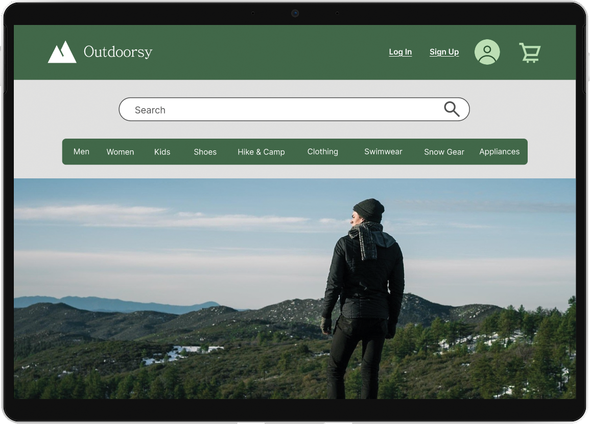
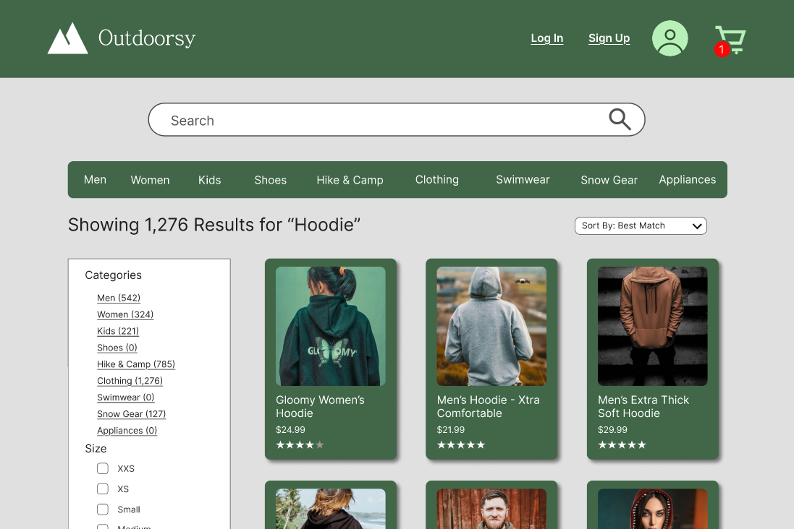
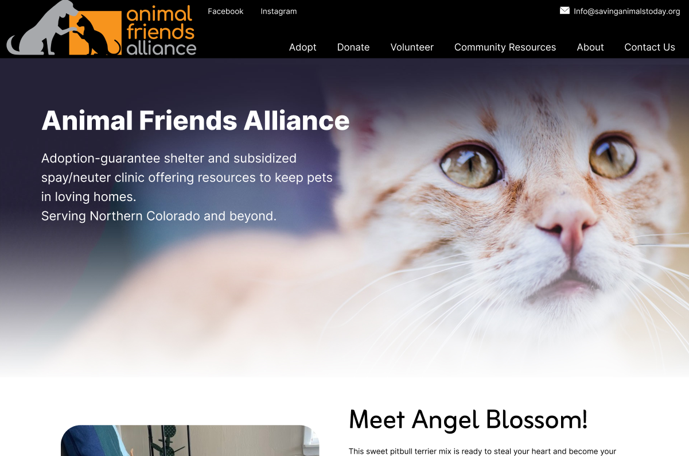

With a focus on UI/UX, I love developing custom websites and applications that prioritize the user’s experience – delivering elegant, functional, and accessible solutions.

Originally developed for a college project, Outdoorsy is an online sporting goods retailer that offers intuitive filtering options, comprehensive product descriptions, and visually appealing graphics.


Based on a real local business for a college project, the Animal Friends Alliance website features stunning visuals, user-friendly navigation, and an extensive adoption FAQ page.